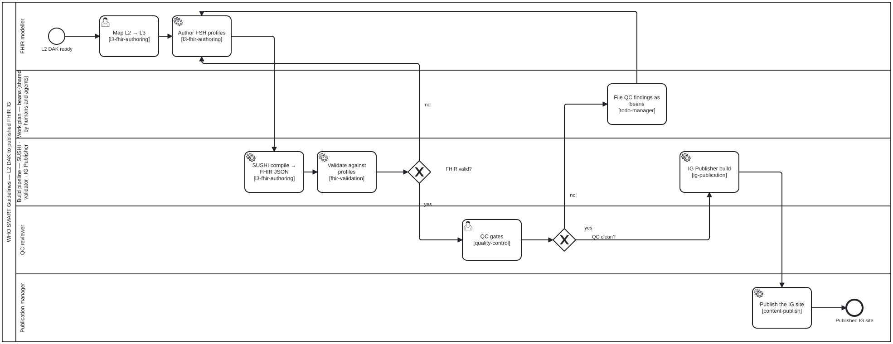

Authoring a WHO SMART IG (L3)
On this page
This page is generated from content/docs/guides-who-smart-ig/ — each section below links to its own source.
The L3 layer turns an L2 DAK into a computable FHIR Implementation Guide. This guide covers authoring FHIR artifacts as FSH, compiling with SUSHI, validating, and publishing with the HL7 IG Publisher — all driven by the LLM.
Skill package: authoring-who-smart-guidelines
Prerequisites
The L3 toolchain is heavier than the platform baseline. The
authoring-who-smart-guidelines package’s Docker manifest provisions it; to run
locally you need:
| Tool | Purpose | Install |
|---|---|---|
| Java 21 (JRE) | IG Publisher | apt install openjdk-21-jre-headless |
| FHIR IG Publisher | build the IG | download publisher.jar from HL7/fhir-ig-publisher |
SUSHI (fsh-sushi) |
compile FSH → FHIR | npm i -g fsh-sushi |
| Jekyll | IG site rendering | gem install jekyll bundler |
Run bun run check-deps and the agent’s check_dependencies tool to confirm.
The L3 pipeline

BPMN 2.0 source · full-size SVG
{kind=link}
| Step | Skill |
|---|---|
| Author FSH (profiles, extensions, value sets, examples) | l3-fhir-authoring |
| Validate against FHIR profiles | fhir-validation |
| QC gates | quality-control |
| Publish the IG | ig-publication |
Workflow
- Map L2 → L3 —
l3-fhir-authoring: turn each data element into a FHIR profile, each value set into aValueSet, each decision into aPlanDefinition/Libraryas appropriate. - Author FSH — the agent writes FHIR Shorthand; SUSHI compiles it to FHIR resources.
- Validate —
fhir-validationruns the validator against the profiles. - QC —
quality-controlenforces the IG’s quality gates. - Publish —
ig-publicationruns the IG Publisher and renders the site.
Making the build incremental
![BPMN swimlane diagram: a source change restores the derived state; if the cache is usable the build computes the change's dependency cone, posts the cone report for the reviewer, checks out and compiles only the cone, validates it against the warm validator service, re-renders the cone's records, merges them with the restored ones, rebuilds the meta-index and assembles the site; a cache miss or a moved toolchain falls back to a full publisher build; QC gates run on the aggregate QA and file findings as beans; a PR branch deploys a preview and never seeds, while main or a release deploys the site and seeds the cache from the green build.](../assets/img/workflows/ig-incremental-build.svg)
BPMN 2.0 source · full-size SVG
{kind=link}
Every trigger in a DAK repository — a push to a PR branch, /validate, /deploy, a
push to main, a release — runs the same full IG Publisher build, and a one-line edit to
one profile costs all of it. Proposal: incremental IG build
measures why that is avoidable: on smart-immunizations the median artefact has no
dependents and the 90th percentile has six, so almost every edit invalidates a handful
of resources and the index. Its overview
lists the eleven changes and pins each to the stage of the review and publish pipeline
where it runs.
The process above is the L3 pipeline’s build lane once the derived artefacts are cached
by dependency cone. Restore first; compute the change’s cone with
bun run content/pipeline/fsh-cone.ts <ig-root> --changed <files>; compile and
validate only the cone against the warm validator; re-render the cone’s records;
rebuild the meta-index; assemble the site. A cache miss or a moved toolchain falls back
to today’s full build, and only a green build of main or a release seeds the cache.
| Step | Implemented by |
|---|---|
| Restore and seed the derived state | ig-cache.sh (proposed; the lake-cache.sh contract) |
| Compute the cone of the change | content/pipeline/fsh-cone.ts |
| Validate the cone | fhir-validation over the warm validator service (proposed MCP tools) |
| Rebuild the meta-index, assemble the site | ig_metaindex_rebuild (proposed), ig-publication |
| QC gates, deploy | quality-control, content-publish |
A mock session
You: Generate the FHIR profile and value set for the immunization data dictionary from the L2 DAK, then build the IG.
Assistant: (loads
l3-fhir-authoring) AuthoredImmunizationRecordprofile +AntigenCodesvalue set as FSH. (runs SUSHI) Compiled to FHIR R4. (loadsfhir-validation) Validator: 0 errors, 2 warnings. (loadsig-publication) Built the IG with the HL7 publisher — site is inoutput/.You: Show me the QA report.
Assistant: (loads
quality-control) QA: broken links 0, profile conformance ✓, terminology bindings resolved ✓.
Next
- Content types — WHO SMART IGs
- Authoring a WHO SMART DAK (L2) — the upstream L2 layer